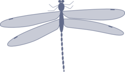
Stichting Stippen.nl
Over de App
Hoofdindeling
Indeling als tekst
Fotos van alle juffers
Achterlijftekening
Blauwe waterjuffers
Biotoop
Waar vind ik deze juffers
Vliegtijd
Wanneer vliegen deze juffers
Deel deze App
= Start de App op met deze pagina.
Wanneer u kort op het rondje klikt, zal deze app de volgende keer met de bijbehorende rubriek opstarten.
≡
Libellen I: waterjuffers
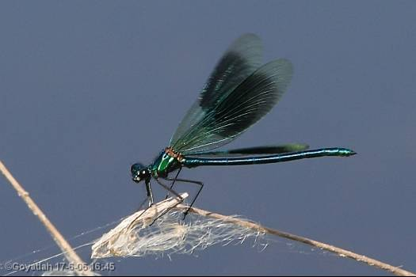
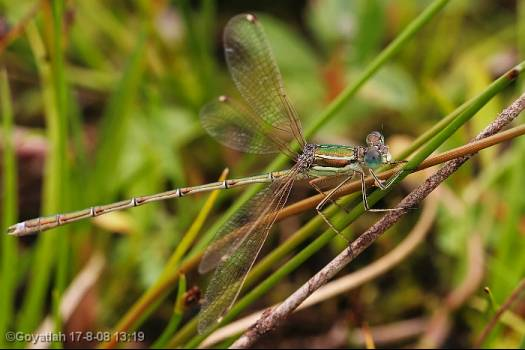
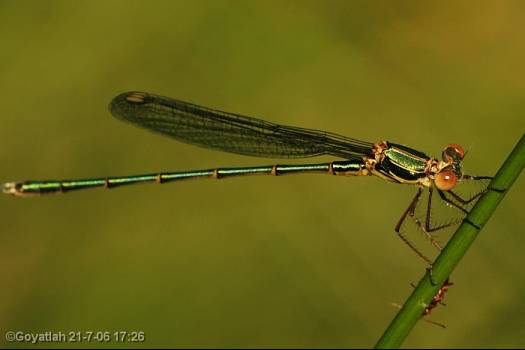
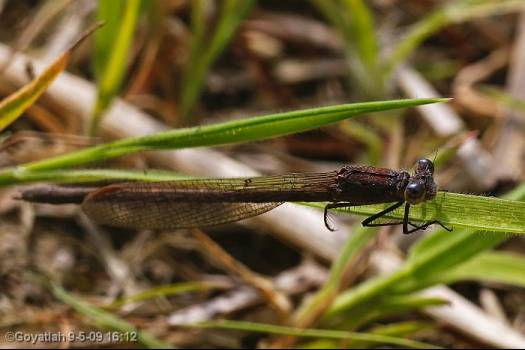
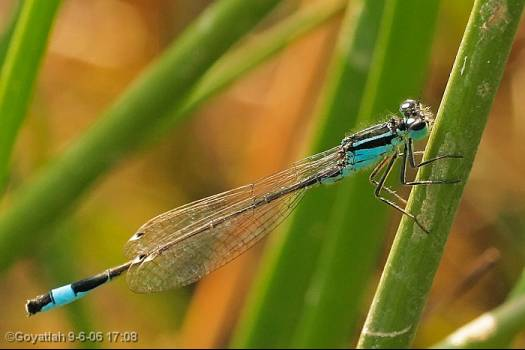
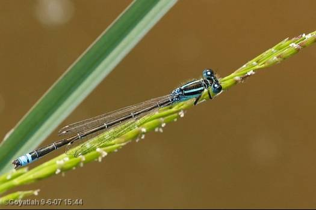
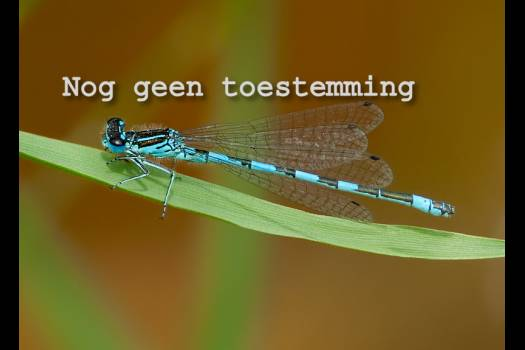
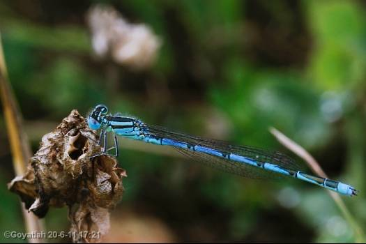
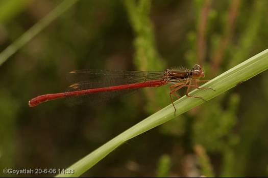
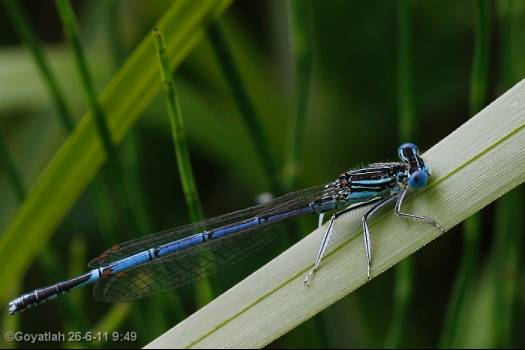
Connecting to Device
© stichting Stippen.nl
Vorige
M / v
Volgende
Zie de
Achterlijftekening
voor de `streepjescode` van het achterlijf.
In deze App vindt u alle waterjuffers van Nederland.
Hoewel het onmogelijk is om alle variëteiten, afwijkingen en levensfases hier te tonen, hopen we dat u tenminste de groep vindt waarin de juffer hoort, en mogelijk de soort.
Voor sommige moeilijker gevallen verwijzen wij graag naar de website van
Goyatlah
.
Deze App is gemaakt door stichting Stippen.nl, die u misschien kent van
Stippen.nl, lieveheersbeestjes van Nederland en België
Veel plezier gewenst met deze App, en we hopen dat dit het begin is van een prettige natuurstudie!
De meeste foto's zijn van Goyatlah ©, met bijdragen van ... ©.
Met hartelijke dank!
Teksten van Stippen
Gebruik van foto's en tekst uitsluitend met toestemming.
Ga doorvoor naar
© Stipnet
De meeste foto's zijn van Goyatlah ©, met bijdragen van ... ©.
Met hartelijke dank!
Teksten van Stippen
Gebruik van foto's en tekst uitsluitend met toestemming.
Ga doorvoor naar
© Stipnet
Bijna alle foto's zijn (c) Goyatlah, met bijdragen van M. van der Wel en ....
Teksten Stichting Stippen.nl, tekstbijdragen Goyatlah.
Met hartelijke dank!
I N D E L I N G
Tekst
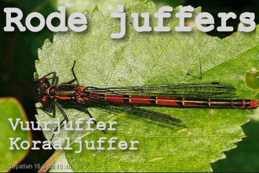
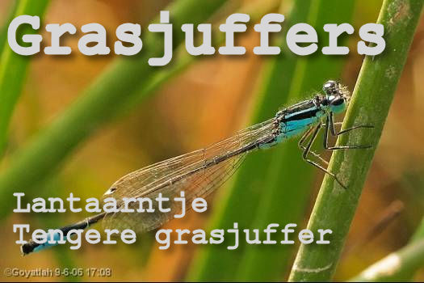
I N D E L I N G
Fotos
Blauwe waterjuffers
Van bovenaf gezien bestaat het achterlijf uit meerdere blauwe en zwarte banen.
Pantserjuffers
Groen of bruin metalic glanzende juffers in rust met half geopende vleugels, vaak hangend aan takken.
'Rode juffers'
Het achterlijf is voornamelijk of deels rood.
Grasjuffers
Van bovenaf gezien is het achterlijf zwart, behalve het een na laatste segment, dat een blauwe 'lantaarn' vormt.
Breedscheenjuffers
De voorste poten zijn, vooral bij de mannetjes, opmerkelijk breed.
Beekjuffers
Deze juffers hebben zwarte vleugels of een zwarte band in de vleugels.
Winterjuffers
Dunne, bruine juffers die ook 's winters in Nederland zijn.s.
Roodoogjuffers
Met duidelijk zichtbare rode ogen.
Anders
Geen van bovenstaande omschrijvingen klopt.
Blauwe waterjuffers
Achterlijfpatronen blauwe waterjuffers
Patronen van (uitgekleurde, volwassen)
mannetjes
.
1 Watersnuffel 2 Variabele- 3 Azuur-
4 Mercuur- 5 Gaffel- 6 Speer- 7 Maan-
8 Donkere- 9 Kanaal-waterjuffer
Patronen van
vrouwtjes
.
B I O T O O P
Vijvers, Poelen, Meren
Allerlei stilstaand water.
Rivieren
Brede, langzaam stromende wateren.
Beken
(Snel) stromende, smalle, ondiepe waters.
Drijvende bladeren
Grotere drijvende planten op het water
Riet
Oevers en wateren begroeid met riet of biezen.
Ondergelopen vegetatie
Tijdelijk ondergelopen gebieden.
Moeras
Zoet watermoerassen of zure veenmoerassen.
Vennen en venen
Meer of minder zure waters.
Anders
Geen van bovenstaande omschrijvingen klopt.
V l i e g t i j d
Welke juffers vliegen nu?
Deze week
Een week eerder
(Klik herhaaldelijk om eerdere weken te zien)
Een week later
(Klik herhaaldelijk om volgende weken te zien)
Voorjaar
maart - mei
Zomer
juni - augustus
Herfst
september - november
Veel soorten hebben andersgekleurde variaties. Individuen kunnen minder goed uitgekleurd zijn. Pas uitgeslopen dieren zijn nog bleek en hebben opvallend glinsterende vleugels. Oudere dieren zijn vaal of juist donker.
Al deze uitzonderingen gaan buiten de opzet van deze app.
Komt u er niet uit, dan kunnen we van harte de uitgebreide website van Goyatlah, die ook bijna alle foto's van deze app heeft gemaakt, van harte aanbevelen.
Ga daarvoor naar
Libellen in Nederland